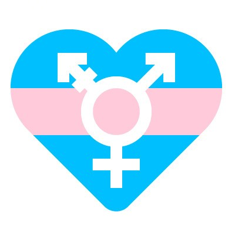

咨询手册第4篇 | 跨儿的心理健康状况
以下文章来源于跨儿心理 ，作者跨儿心理

跨儿心理
.
跨儿心理小组，是一个专注于跨儿（跨性别者与非性别常规者）心理健康的公益团队。小组致力于通过社群服务、社群培力、调查研究、公众教育与社会倡导等工作，改善跨儿的福祉，促进社会的性别多元平等。


参考文献：
[1]Jackman, K. B. , Dolezal, C. , & Bockting, W. O. . (2018). Generational differences in internalized transnegativity and psychological distress among feminine spectrum transgender people. Lgbt Health, 5(1), 54.
撰稿：小琳
编辑：欢喜
排版：健健
校对：四爺

原文公众号：